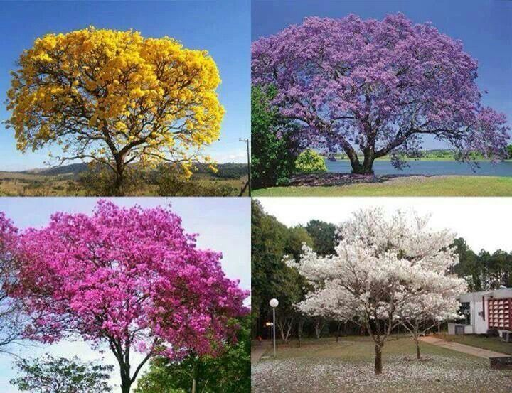

| Los árboles coloridos más bonitos del mundo |
- Glicinas
- Las Glicinas abarcan 10 especies,
son trepadoras y tienen un follaje con flores violetas, azules y blancas.
- Jacaranda
- También es conocido como gualanday o tarco. Sus flores dejan verse en primavera
y otoño con un azul degradado en violeta.
- Flamboyán
- Pertenece a la familia de las fabáceas y está considerado
uno de los árboles más coloridos del mundo.
- Cerezo de Alemania
- Son unos de los árboles más hermosos del mundo, también conocidos como Sakura.
Durante dos semanas en primavera hacen túneles de flores rosadas.
|

|